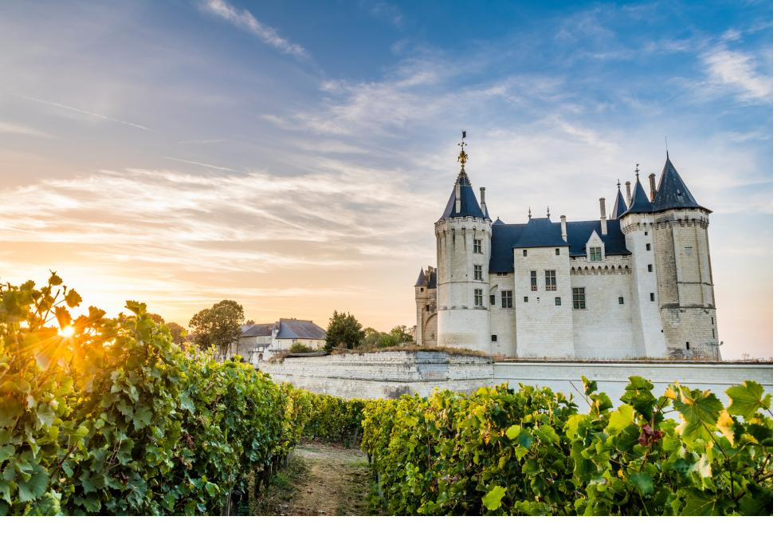

Cena de maridaje en torno al n'dolè y al poulet DG, inmersión en el corazón del futuro Hub MAISON M.
3 días · desde 690 €
« No se come solo un buen plato. »— Proverbio douala
Maridaje de kedjenou de pollo & blancos del Loira, descubrimiento de los mercados y la cocina marfileña.
3 días · desde 720 €
« El chile que madura junto se comparte junto. »— Proverbio akan
Thiéboudienne y rosados de Provenza frente al Atlántico, cena en casa del anfitrión y terroir local.
4 días · desde 850 €
« La mano que da el arroz nunca olvida al invitado. »— Proverbio wolof
Tajín de cordero con ciruelas & vinos del Ródano, riads y el arte de recibir marroquí.
4 días · desde 990 €
« La mesa generosa acerca los corazones alejados. »— Proverbio marroquí
Viñedos de Stellenbosch y braai sudafricano, el encuentro Nuevo Mundo / cocina de fuego.
5 días · desde 1 450 €
« El fuego que cuece la carne reúne también la palabra. »— Proverbio xhosa
Burdeos, Borgoña, Loira : inmersión VIP en nuestros dominios asociados.
2 días · desde 540 €
« Buen vino y buena acogida hacen feliz el viaje. »— Proverbio beninés
« Viajar por un viñedo es aprender a leer la tierra antes de beber el cielo. »
Prestige Wine Academy
Cada visita incluye el encuentro con el viticultor, una degustación comentada por un sumiller TAM, un almuerzo de maridaje y transporte privado. Las experiencias VIP integran una noche en château y el acceso a las cuvées confidenciales.